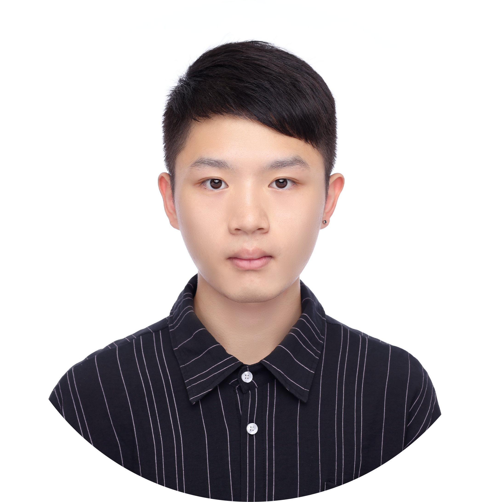

林映宇
您好，我是林映宇，今年25歲，畢業於東海大學工業設計系，退伍後就任於一間技術研發導向的能源管理公司一年多的時間。
身為產品設計師，在大學時便意識到跨域合作的重要性:產品設計師必須與實務開發的工程師們密切合作，才能滿足使用者的需求，讓設計的成果更完善。因此在因緣際會下，與來自同校資管、電機、資工系的朋友們一同組成了課外的新創自主研發團隊，從中扮演了產品設計及多媒體行銷的角色，以學習如何與其他領域的夥伴一同共事。團隊除了參與各式新創競賽外，也帶領了高中教育營，並同時進行了與長照、交通載具相關的獨立開發項目。
而為了延續與跨域團隊共事所積累的工程實務經驗，首份工作便投身於技術研發型的能源管理公司，接觸更多工程的實務開發項目。期間除了持續累積工業設計的專業能力外，也參與了從硬體、韌體到軟體的完整工程實務開發流程。